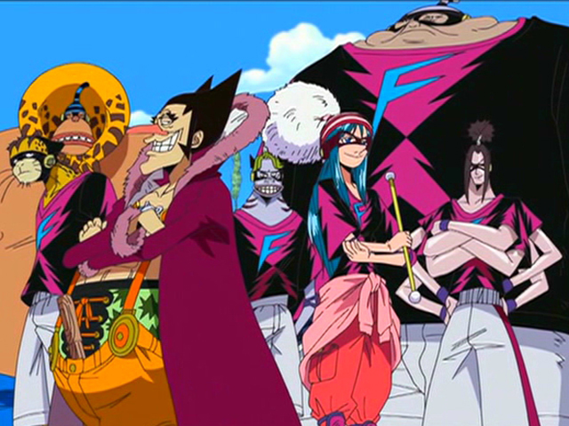
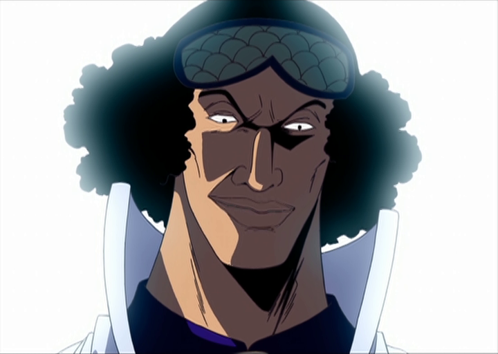
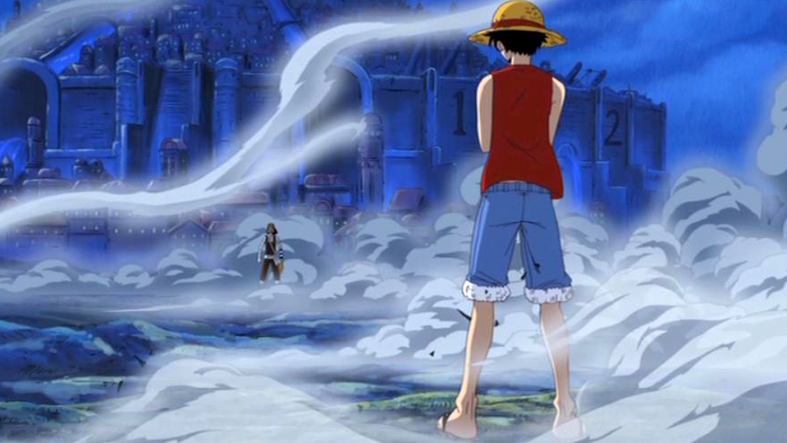
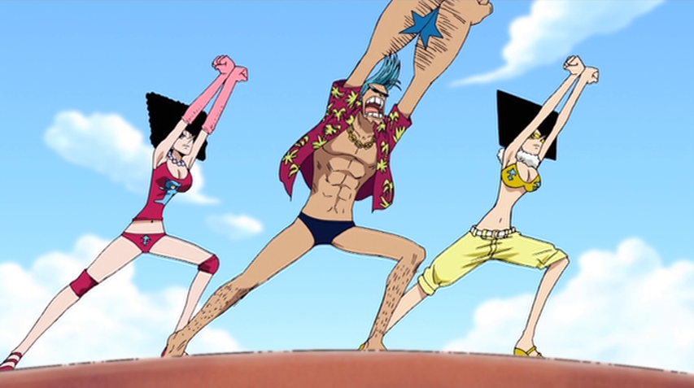
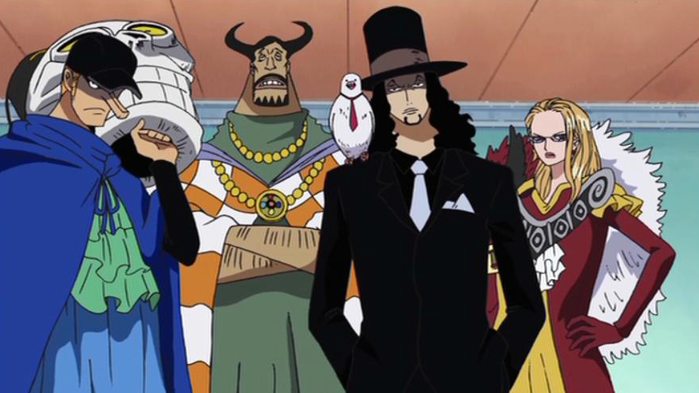
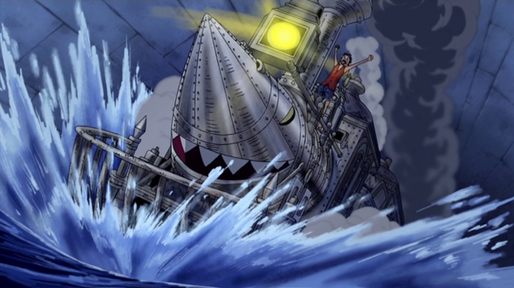

ウォーターセブン編
長い島の冒険
 空島から戻ってきた麦わらの一味が上陸したのは、〝存在するもの全て何かしらが長い〟ロングリングロングランド。その島でルフィ達は、フォクシー海賊団船長〝銀ギツネのフォクシー〟に〝デービーバックファイト〟を挑まれる。
それは負けたら〝仲間〟と〝誇り〟を失う恐怖のゲームだった。勝負は３回戦で行われ、第一回戦「ドーナツレース」にウソップ、ナミ、ロビン、第二回戦「グロッキーリング」にゾロ、サンジ、チョッパー、最終戦の「コンバット」にはルフィが出場する事に。
ドーナツレースでは、ウソップ達が勝ったと思われたその瞬間、フォクシーのノロノロビームをくらい、まさかの敗北。一味はチョッパーを奪われてしまう。
出場予定だったチョッパーを欠き、ゾロとサンジだけで挑む事になったグロッキーリングでは、犬猿の仲の２人が相手の反則攻撃に苦しめられながらも見事勝利。チョッパーを無事取り戻す事ができた。
そして迎えた最終戦。得意のノロノロビームでルフィを翻弄するフォクシー。必死に食らいつくルフィだったが、ステージである船内に仕掛けられたトラップにより、苦戦を強いられてしまう。戦いはフォクシー優勢かと思われたが、フォクシーのノロノロビームをルフィが隠し持っていた鏡の破片で弾き返し、一気に形勢逆転。ルフィがノックアウト勝ちをおさめ、デービーバックファイトは麦わらの一味の勝利で終わった。
海軍本部「大将」青キジ
 ゲームを終え、次の航海へ出発しようとするルフィ達の前に、一人の男が突如姿を現す。男の名は海軍本部〝大将〟青雉。一味を前に、青雉はロビンが危険な存在だと断言する。
仲間を守ろうと青雉に戦いを挑むルフィ達だったが、その実力差は大きく、〝ヒエヒエの実〟の能力によってルフィとロビンが氷漬けにされてしまう。だが青雉は「クロコダイル討伐の件をチャラにして貰おう」と言い捨てると、とどめを刺す事なく、その場を去った。
ルフィvsウソップ
 メリー号の修理、そして腕の立つ船大工を仲間にすべく、世界最高の船大工が集まる水の都ウォーターセブンにやってきたルフィ達。早速、造船会社ガレーラカンパニーを訪ね、船の修理を依頼するも、損傷が激しく修復不可能との査定が下される。
さらにウソップが、船の修繕費にあてるはずだった２億ベリーを解体屋フランキー一家に奪われてしまい…。責任を感じたウソップは、一人で一家のアジトに乗り込むが返り討ちに。
それを知り激怒したルフィ達は、一家をアジトごと壊滅させる。だが一家の棟梁であるフランキーは金を持って留守にしており、２億ベリーを取り戻す事はできなかった。
「メリー号と別れて新しい船に乗り換える」。そう決断したルフィは、船に戻り、仲間達にその事を告げる。だが納得がいかないウソップは、大喧嘩の末、一味を抜けると宣言。メリー号を賭けて、ルフィに決闘を挑む。奇策を用いてルフィに挑むウソップだったが勝つ事は叶わなず、ルフィはウソップに別れを告げ、船を明け渡した。
フランキー登場
 決闘から一夜、ウォーターセブン市長でガレーラカンパニー社長でもあるアイスバーグの暗殺未遂事件が発生。犯人の一人がロビンである可能性が浮上し、ルフィ達にも共犯の疑いがかけられてしまう。
そんな中、ルフィとナミの前にフランキーが現れ、部下の敵を討とうと襲いかかる。改造人間（サイボーグ）の強靭なボディとトリッキーな攻撃で、ルフィと互角に渡り合うフランキー。何とかその場を切り抜けたルフィ達は、真相を確かめる為アイスバーグ邸へ向かうが、アイスバーグは「ロビンを見た」と断言する。
その頃、サンジとチョッパーは町でロビンと遭遇するも、ロビンは「もうあなた達の所へは戻らないわ………」と告げ、その場を去る。その言動に何かを感じ取ったサンジは、一人ロビンを追うのだった。
9番目の正義
 チョッパーからロビンの言葉を伝え聞いたルフィ達は、ロビンに直接真意を確かめるべく、再びアイスバーグのもとへ。しかしそこで、ガレーラカンパニーのロブ・ルッチ、カク、カリファ、そして酒場の店主であるはずのブルーノがアイスバーグを襲っている場面に遭遇する。さらにその場にはロビンの姿も。
ルッチ達の正体は、市民の殺害さえも許されている世界政府直下の諜報機関サイファーポールNo.９、通称〝ＣＰ９〟。彼らはアイスバーグが隠し持つとされる〝古代兵器プルトン〟の設計図の奪取する為、5年もの間、偽りの姿で潜入任務を続けていたのだ。ロビンも〝世界で唯一「古代兵器」を復活させられる人物〟として、彼らと行動を共にしていた。
ルフィの制止を振り切り、ＣＰ９と共に姿を消すロビン。そしてＣＰ９は古代兵器の地図の真の所有者であるフランキー、運悪くその場にいたウソップを捕らえると、海列車で司法の島エニエス・ロビーへと出発する。だがその列車には、ロビンを単独で追っていたサンジも密かに乗り込んでいた。
ロケットマン
 アイスバーグからロビンの本当の〝願い〟を聞かされたナミ。彼女の願いは、ルフィ達を〝バスターコール〟から守る事だった。バスターコールとは、海軍が国家戦争クラスの軍事力で行う無差別攻撃で、一度標的にされればあとには何も残らない。ＣＰ９と同行してエニスス・ロビーに連行されれば、生きて帰れない。そうと知りつつロビンは、仲間を守る為、ＣＰ９と行動を共にしていたのだ。それを聞いたルフィ達は、ロビンを取り戻す為、パウリーをはじめとするガレーラカンパニーの船大工、そして棟梁の救出に燃えるフランキー一家と共に暴走海列車ロケットマンに乗り、エニエス・ロビーを目指す。
一方、別行動中のサンジも、ロビンの思いを聞いて奮起。解放されたフランキー、そして〝そげキング〟と正体を偽るウソップと共にロビン奪還に乗り出す。一度はロビンを取り戻す事に成功したサンジ達だったが、仲間の身を案じるロビンは共に行く事を頑なに拒否。そしてついに、海列車はエニエス・ロビーへと到着してしまう。